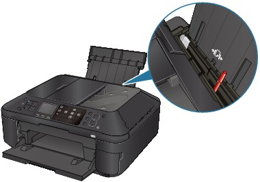
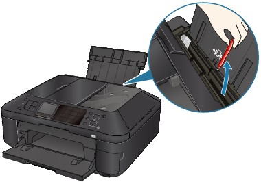

-
Check 1: Make sure of the following when you load paper.
-
When loading two or more sheets of paper, flip through the paper before loading.
-
When loading two or more sheets of paper, align the edges of the sheets before loading.
-
When loading two or more sheets of paper, make sure that the paper stack does not exceed the paper load limit.
However, proper feeding of paper may not be possible at this maximum capacity depending on the type of paper or environmental conditions (either very high or low temperature and humidity). In such cases, reduce the sheets of paper you load at a time to less than half of the paper load limit.
-
Always load the paper in portrait orientation, either in the Rear Tray or the Cassette, regardless of the printing orientation.
-
When you load the paper on the Rear Tray, load the paper with the print side facing UP and slide the Paper Guides to align with the both sides of the paper.
-
When loading paper in the Cassette, slide the Paper Guide on the front side to align with the corresponding mark of page size. Load the paper with the print side facing DOWN, align the right edge of the paper stack against the right side of the Cassette, then slide the Paper Guide on the left side to align with the left edge of the paper stack.
-
-
Check 2: Check to see if the paper you are printing on is not too thick or curled.
-
Check 3: Make sure of the following when you load envelopes.
When printing on envelopes, refer to Loading Paper / Originals, and prepare the envelopes before printing.
Once you have prepared the envelopes, load them in portrait orientation. If the envelopes are placed in landscape orientation, they will not feed properly. -
Check 4: Confirm the paper source setting.
* If the paper source setting is not changed since you purchased this machine, the paper source for plain paper is the Cassette.
-
Setting with the Operation Panel on the machine:
-
Setting with the printer driver:
-
For information on the paper source for plain paper when the Paper Source on the printer driver is set to Automatically Select:
-
-
Check 5: Remove the foreign object in the Cassette.
-
Check 6: Make sure that there are not any foreign objects in the Rear Tray.
If the paper tears in the Rear Tray, see Paper Jams to remove it.
If there are any foreign objects in the Rear Tray, be sure to turn off the machine, unplug it from the power supply, then remove the foreign object.
 -
Check 7: Clean the Paper Feed Roller.
 Note
Note-
Cleaning the Paper Feed Roller will wear the roller, so perform this procedure only when necessary.
-
-
Check 8: If two or more sheets of paper feed from the Cassette at once, clean the inside of the Cassette.
For information on cleaning the inside of the Cassette, refer to Routine Maintenance.
-
Check 9: Is the Rear Cover closed completely?
Paper may be jammed if the Rear Cover is not closed completely. Push the Rear Cover until it is closed completely.
Refer to Overview of the Machine for the position of the Rear Cover.